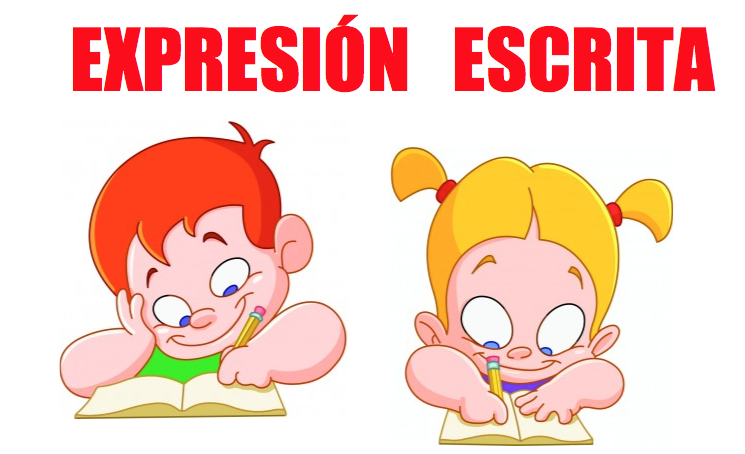
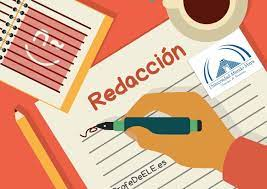

Definicion

La comunicación escrita es aquella que se establece a través de las palabras o de cualquier otro código escrito. El emisor y el receptor deben compartir el conocimiento de ese código para que la comunicación sea efectiva.
En esta clase de comunicación, el emisor escribe y el receptor lee. Siempre, como canal, debe haber un dispositivo físico, que puede ser una hoja de papel, la pantalla de una computadora o, incluso, una pared.
La comunicación escrita más antigua se produjo a través de pictogramas, es decir, signos o dibujos que representan un concepto o idea.
Características de la comunicación escrita
Las principales características de la comunicación escrita son:
No es simultánea. El mensaje no se recibe a medida que se va produciendo, como sucede en una conversación en la que el receptor escucha mientras el emisor habla, sino que el tiempo varía de acuerdo al tipo de comunicación. Por ejemplo, en un chat, esa brecha es mucho más acotada que en un diario impreso.
Permanece en el tiempo. A diferencia del mensaje oral, el escrito logra perpetuarse porque se asienta en libros, sitios web, periódicos, entre otros.
Tiene reglas específicas. El mensaje escrito debe adaptarse a reglas gramaticales, ortográficas o de puntuación para que el contenido cobre sentido y sea efectivo.
No está limitada por la distancia. A diferencia de una conversación cara a cara, los mensajes escritos pueden dar la vuelta al mundo. Las distancias no son un problema.
Es planificada. El emisor debe reflexionar sobre cómo formulará el contenido para que tenga cohesión y coherencia y para que sea claro y preciso.
Tipos y ejemplos de la comunicación escrita
La comunicación escrita puede ser personal o estar diseñada para un público masivo. Además, puede tener diferentes objetivos, como informar, describir, narrar, convencer o entretener, entre otros.
Algunos ejemplos de comunicación escrita pueden ser los siguientes:
Folletos o volantes. Son textos que transmiten mensajes vinculados con la propaganda o la publicidad. En general, buscan convencer al receptor de algo. Se suelen repartir en espacios públicos y tienen poco texto. Además, cuentan con recursos para hacerlos atractivos: colores, distintos tipos de tipografía, imágenes, texto en negrita, entre otros.
Cartas. Son textos cuyo mensaje se escribe en un papel que se suele colocar en un sobre para que el correo lo haga llegar a destino. A diferencia de los folletos, son mensajes personalizados y, dependiendo de la relación entre el emisor y el receptor, son más o menos formales.
Correos electrónicos. Son la versión moderna de las cartas, pero se envían a través de Internet. A diferencia de estas, permiten adjuntar archivos, algo que por medio de un sobre podría resultar mucho más costoso y complicado. Su contenido, al igual que el de las cartas, puede ser de lo más variado: personal, laboral, comercial, informativo, entre otros.
Diarios y revistas. Son textos cuyo contenido suele estar vinculado con la actualidad y se escriben con el fin de informar o entretener. Están realizados por periodistas y se imprimen cada cierto lapso de tiempo. En general, abarcan temáticas específicas, por eso los lectores los compran de acuerdo con sus intereses. Una vez leídos, estos mensajes se desechan, salvo que formen parte de alguna colección.
Libros. Son textos cuyas principales funciones son entretener y difundir conocimiento. A diferencia de los diarios o las revistas, no tienen una periodicidad y no están pensados para ser descartados. Pertenecen a los géneros más variados y, salvo excepciones, no pierden vigencia.
Plataformas de Internet. Son textos que se publican en sitios web y redes sociales, como WhatsApp o X (conocida anteriormente como Twitter). En estos soportes, los mensajes llegan con mayor velocidad y en forma masiva y económica. Para algunos, son un avance clave en la democratización del conocimiento.

Importancia de la comunicación escrita
La comunicación escrita representa un antes y un después para la humanidad. Algunas claves para dilucidar su importancia son:
Permite la difusión del conocimiento. Con la redacción y publicación de contenidos de todo tipo, el conocimiento se puede difundir de forma masiva.
El tiempo ya no es un obstáculo. Los mensajes se pueden almacenar y difundir de generación en generación, es decir, ya no quedan limitados a una etapa de la historia o un momento específico.
Las distancias se rompen. Al igual que con el tiempo, las distancias ya no son un impedimento para la difusión del conocimiento, puesto que la escritura permite transmitir mensajes sin limitaciones espaciales.
Ayuda a fortalecer los vínculos personales. Las cartas primero y luego los correos electrónicos, chats o redes sociales han ayudado a las personas a mantenerse en contacto o, incluso, a recomponer vínculos que el paso del tiempo y la distancia habían roto.
Enriquece la cultura. Gracias a la comunicación escrita, surgieron nuevos tipos de expresión y géneros, como las novelas, las poesías, los cuentos y las obras de teatro.
Elementos de la comunicación escrita
Dentro de los elementos que componen la escritura, se pueden mencionar:
Estructura. Es la manera en la que el emisor ordena aquello que quiere comunicar. Puede ser en párrafos, capítulos, diálogos, ítems, entre otras opciones.
Estilo. Es la manera en que se redacta el contenido. Puede ser formal o informal, personal o impersonal.
Contenido. Es aquello que se quiere comunicar. Puede ser conocimiento, las cualidades de un producto que se quiere vender, una historia de ficción, entre tantos otros.
Elementos de la comunicación: En todo evento comunicativo, ya sea oral o escrito, siempre aparecen los siguientes elementos:
Emisor. Es quien elabora y transmite un mensaje.
Receptor. Es quien recibe y comprende el mensaje.
Mensaje. Es el contenido o la información transmitida.
Código. Es la lengua, es decir, el sistema de signos que se utiliza para elaborar, transmitir y comprender un mensaje.
Canal. Es el medio empleado para transmitir y recibir un mensaje.
Contexto. Es la situación en la que sucede un evento comunicativo.
Técnica y estrategias de Interpretación de textos
1. Vuelve a leer el texto. Normalmente, al leer un texto por primera vez nos quedaremos con la idea principal. ...
2. Usa tu conocimiento previo. ...
3. Lee entre líneas, usa las pistas del contexto. ...
4. Piensa en voz alta. ...
5. Haz un resumen. ...
6. Ubica las palabras claves. ...
7. Haz predicciones. ...
8. Visualizar
qué necesitamos para hacer buenos comentarios de textos:
· Lee el texto completo para obtener una idea general.
· Subraya las ideas principales.
· Anota las ideas y luego ordénalas para tener mayor coherencia.
· Contextualiza el escrito, es decir, haz una síntesis relacionando tanto el tiempo y obra del autor.
· Utiliza tus propias palabras para redactar las ideas que seleccionaste como principal y secundarias. Recuerda que debes relacionar en todo momento lo que escribes con el pensamiento del autor.
· Cierra el texto con un comentario crítico. Proponer nuevas soluciones, comparar las ideas del autor con otros o encontrar puntos débiles de las tesis que se expone, es lo propio para dar el toque final al escrito.
El estilo de redacción del texto debe ser con un lenguaje claro y sencillo. Utilizar palabras rebuscadas puede confundir a nuestro profesor, así como usar frases hechas o informales harán que nuestro trabajo tenga poca credibilidad.
Principios de redacción
La redacción no debe de tener hechos erróneos, ni otras equivocaciones. Debe presentar solo hechos esenciales y exactos, sin ninguna desviación o exageración. El uso correcto de la gramática, de la puntuación y ortografía, también contribuyen a que la redacción sea fácil de comprender.
Existen 3 fundamentos de redacción básicos:
Corrección.
Adaptación.
Eficacia.
Etapas de la redacción
Planificación,
Textualización. Y Revisión.
Características de la redacción:
*Claridad: el orden de transmitir ideas para que el lector entienda el texto desde la primera lectura.
*Concisión: consiste en la brevedad del texto sin explicar ideas que alejan al lector del tema tratado.
* Sencillo: consiste en emplear palabras de uso común.
Cómo Escribir un Buen Párrafo
1. Escoge un tema sobre el cual escribir.
2. Escribe una buena oración principal.
3. Para sustentarla, busca los detalles apropiados.
4. Desecha los detalles irrelevantes.
5. Construye y enlaza las oraciones coherentemente.
6. Concluye con una oración apropiada.
7. Revisa y corrige.
· Para esto pregúntate:
¿Desarrollo de ideas centrales?
¿Hay oración principal?
¿Concuerdan las partes de las oraciones?
¿Las oraciones están adecuadamente separadas por signos de puntuación?
¿Las palabras son apropiadas?
¿Se refleja en el párrafo las ideas que tenía que expresar?
¿Se tiene correcta la ortografía?
Elementos de Enlace
Son partículas o expresiones que ayudan a lograr la continuidad en el enlace de
ideas dentro de los párrafos, o para relacionar unos con otros.
Estas son:
• Las que indican sucesión de la misma idea: al principio, en segundo
lugar, a continuación, por último.
• Las que indican limitación: pero, no obstante, con todo, sin embargo.
• Las que indican exclusión: por el contrario, antes bien.
• Las que indican concesión (derecho a ): aunque, si bien, es cierto que.
• Las que indican distribución: bien (unos)... bien (otros).
• Las que indican consecuencia: por lo tanto, pues, luego, por
consiguiente.
• Las que indican continuidad: pues bien, ahora bien, además, por otra
parte, como decíamos.
o Errores comunes en la redacción según las propiedades textuales
1-Errores de coherencia: Después de todo, el objetivo de la escritura es beneficiar a los lectores. Sin la coherencia y la cohesión, los lectores pueden detectar fragmentación en el texto y sentir que hay lagunas en las ideas presentadas. No hace falta decir que los textos sin coherencia son difíciles de leer y entender.
2-El error más frecuente consiste en el uso incorrecto o arbitrario de CONECTORES para enlazar los distintos párrafos o giros del texto. El alumno debe ser capaz de manejar el vocabulario con fluidez. Asimismo, su competencia léxica influirá en la calificación final.
3-Errores de cohesión: La cohesión es esencial en cualquier texto escrito, ya sea un ensayo, un artículo, un informe o cualquier otro tipo de comunicación escrita. La cohesión se refiere a la capacidad del texto para fluir de manera natural y mantener la conexión entre las ideas presentadas. Es importante tener en cuenta que la cohesión no solo afecta la claridad y la comprensión del texto, sino que también tiene un gran impacto en la credibilidad y la efectividad de tu comunicación.
4-Para evitar errores comunes que pueden afectar la cohesión de tus textos, debes asegurarte de: Falta de transiciones adecuadas, Uso excesivo de palabras de transición, Cambios bruscos de tema, Falta de repeticiones estratégicas, Falta de estructura clara, Uso incorrecto de citas y referencias, Falta de revisión y edición.
5-Mantener la cohesión no solo mejorará la claridad y la comprensión del texto, sino que también aumentará la credibilidad y la efectividad de tu comunicación escrita. Con un poco de práctica y atención, puedes evitar estos errores comunes y crear textos más cohesivos y efectivos.
6-Errores de adecuación: Un texto es adecuado cuando: - Se adapta al tema del que va a hablar. - Se adapta a la persona que lo emite o a la persona que lo recibe. - Es conveniente en la situación o lugar en que se encuentra. - Se adapta a la finalidad.